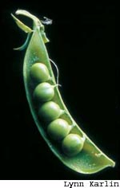

From left: Today, we can enjoy the edible-podded snow and snap peas and even purple-podded varieties used to make pea soup, in addition to the English shell peas that became famous in the 17th century.